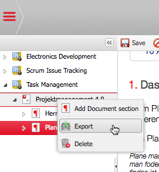

You can create an MS Word document from a Wiki document using an MS Word template. You
can create PDF documents from Wiki documents based on LaTeX and Freemarker templates.
To export a document proceed as follows:
- In the Wiki navigator right click on the document you want to export and select
"Export".

Selecting the document
- In the box that appears select an existing template from the available list or browse and
upload a new template file. MS Word templates have the suffix “.docx” while LaTeX/Freemarker
templates have the suffix “.tlx”.
- Click on "Export" to create the MS Word or PDF document.